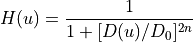
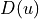

Reading the data¶
Lately, the .fits data was transformed into .csv and saved in database/csv_files. We are going to import a light curve sample and work with it.
[ ]:
FILE_PATH = '/content/drive/MyDrive/01 - Iniciação Científica/02 - Datasets/csv_files/EN2_STAR_CHR_0101086161_20070516T060226_20071005T074409.csv'
[ ]:
import pandas as pd
data_sample = pd.read_csv(FILE_PATH)
display(data_sample)
| DATE | WHITEFLUX | |
|---|---|---|
| 0 | 2007-05-16 18:10:55.071642 | 112626.77 |
| 1 | 2007-05-16 18:19:27.113766 | 112605.61 |
| 2 | 2007-05-16 18:27:59.155929 | 112771.50 |
| 3 | 2007-05-16 18:36:31.198092 | 113113.60 |
| 4 | 2007-05-16 18:45:03.240256 | 112621.79 |
| ... | ... | ... |
| 23946 | 2007-10-05 19:08:02.358665 | 112438.61 |
| 23947 | 2007-10-05 19:16:34.313684 | 112406.01 |
| 23948 | 2007-10-05 19:25:06.268742 | 112496.13 |
| 23949 | 2007-10-05 19:33:38.223801 | 112344.83 |
| 23950 | 2007-10-05 19:42:10.178859 | 112318.50 |
23951 rows × 2 columns
[ ]:
import numpy as np
x = data_sample.DATE.to_numpy()
y = data_sample.WHITEFLUX.to_numpy()
Butterworth Transfer Function¶
The transfer function of a Butterworth 1-D lowpass filter (BLPF) of order  , and with cutoff frequency at a distance
, and with cutoff frequency at a distance  from the origin, is defined as
from the origin, is defined as

where  and was defined on 03 - Ideal Lowpass Filters.ipynb.
By the definition, the Butterworth filter have two free parameters: the cutoff frequency and the filtering order. Then, we can modify both, as we can see on the code cell below, intending to have the best results possibles.
Note. The cutoff frequency must be given in Nyquist.
[ ]:
order = 2
cutoff_freq = 0.2
[ ]:
def butterworth_array(array, fourier_transform, cutoff_freq, order):
# Extrating information of the signal
n_time = len(array)
D0 = cutoff_freq * n_time
xc = n_time
# Creating the filter array
len_filter = len(fourier_transform)
filter = np.zeros(len_filter)
for i in range(len_filter):
filter[i] = 1.0 / (1.0+(abs(i-(xc-1.0))/D0)**(2.0*order))
return filter
Choosing the best Butterworth parameters¶
On filters module, we can pass butterworth on the filter_technique and it will makes all the procedures for the Butterworth Lowpass filter.
[ ]:
from tools import *
Plotting different cutoff frequencies and orders¶
[ ]:
orders = [1, 2, 3, 4, 5, 6]
cutoff_freqs = [0.1, 0.2, 0.3, 0.4, 0.5, 0.6, 0.7, 0.8, 0.9]
[ ]:
for order in orders:
for cutoff_freq in cutoff_freqs:
Filter = filters.FrequencyDomainFiltering()
Filter.filter(array=y, filter_technique='butterworth', numExpansion=70, cutoff_freq=cutoff_freq, order=order)
y_filtered = Filter.getFiltered
title = f"Butterworth filter with Order = {order} and Cutoff frequency = {cutoff_freq}"
viz.view_filter_results(x, y, x, y_filtered, title=title)
print()
Output hidden; open in https://colab.research.google.com to view.